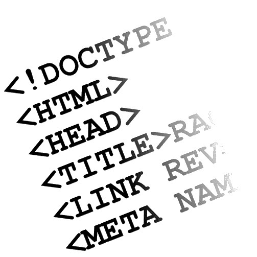

Después de algo más de un mes buscando lugares en los que trabajar de informático, en mi campo, en mi expecialización, después de varias entrevistas poco satisfactorias (quizá por ambas partes), Indra me contactó y me quiso entre sus filas. Bueno, más bien fue Minsait, una compañía interna de Indra que se encarga de la parte de consultoría en TI y desarrollo digital (o algo así). La entrevista fue muy similar a otras que ya había tenido: estudios, experiencia anterior, intereses... pero huo una parte de ésta que me extrañó un poco. A diferencia de otros sitio, me preguntaron por mi conocimiento de algunas de las tecnologías que usaban ellos (en vez las que podría haber visto yo en la carrera) y, la verdad, me sonaron muy pocas.

Volviendo al tema de la entrevista, lo sucedido durante ésta me hizo creer que mis posibilidades de entrar en una de las grandes consultoras españolas eran mínimas. Pero lejos de este pensamiento, a los pocos días me comunicaron por correo electrónico que les gustaría que me incorporase a su equipo de trabajo. Las condiciones no parecían malas: 43 horas semanales (9 de lunes a jueves y 7 los viernes), horario flexible, contrato en prácticas de 1 año con posible subida a los 6 meses del 5%, "jornada reducida" (7 horas) en julio y agosto... Para ser mi primer trabajo no iba a estar nada mal, ¿no? Eso sí, una hora y media de transporte público de ida y lo mismo de vuelta desde mi casa hasta las oficinas y viceversa, eso si no había problemas con el metro o la renfe. No me lo pensé mucho. Me dije a mi mismo: voy a probar y, si veo que no aguanto el ritmo por el horario, a los 2 mese me piro.
Después de 5 sufridos días, me llegó la noticia que me mandaban a cliente. Y no uno cualquiera: ADIF, a 40 minutitos en transporte público, un auténtico lujo comparado con lo otro. Tengo que resaltar que en este punto me llevé mi primera sorpresa con la gestión del trabajador por parte de Indra, pues mis compañeros de oficina se enteraron antes que yo de que me iban a llevar a cliente. No tenía ni idea de lo que iba a hacer y esos primeros 5 días me sentía inútil por no colaborar con nadie en ningún proyecto. Sólo me decían:
sin ningún tipo de fin y eso me agoviaba un poco. Incluso una vez un compañero, 2 horas antes de acabar mi jornada, me miró y me dijo: Pírate a casa, si seguramente te vayas a cliente y eso que estás haciendo no te sirva para nada.
En las oficinas de ADIF todo fue como la seda (a excepción de algunos detallitos de nada). Compañeros muy agradables y comprometidos, amables y trabajadores. En definitiva, me dio mucho gusto trabajar con ellos. A excepción de una persona. Pero este post no está para juzgar a esa persona, sino mi experiencia con Indra y las conclusiones que puedo sacar sobre la política de empresa de cara al trabajador. Mi paso por ADIF duró casi 8 buenos meses. Aprendí bastante, hice buenos amigos y, por qué no decirlo, gané un dinerillo que me vendría muy bien después.
La cosa se torció a finales del mes de julio, cuando tuve que empezar a plantearme el dejar la empresa. Pero para continuar con la historia, creo que es importante destacar un punto: el departamento de recursos humanos de Indra, por decirlo sin ofender a nadie, es una mierda. La primera semana de trabajo les escribí un correo con dudas relativas a ciertos aspectos de mi puesto. Ese correo nunca tuvo respuesta. Más adelante, me enteré por mano de mis compañeros en ADIF que no suelen contestar a los correos. ¿Y para que quieren entonces una dirección de email? Por lo visto, hay un procedimiento interno mediante el cual abres una consulta al departamento que desees y en el periodo de entre unas horas y unos largos días te contestarán para resolver tu incidencia. Bueno, pues si mal no recuerdo las consultas que yo abrí fueron contestadas en una media de 5 días. Bastante "rápido" cuando podría tratarse de un tema urgente, ¿no?
Pues bien, llegados a este punto del mes de julio, digamos día 30 o 31, recibo una llamada telefónica (a la hora de mi almuerzo) no de mi responsable, sino de mi jefe directo. Bueno, "mi responsable" también estuvo en la llamada.
En esta llamada, mi jefe me comunica que quiera hablar sobre 2 temas: mi subida de los 6 meses y mi marcha.
La subida
Simple, bonita y corta. Así fue la conversación de mi subida de sueldo correspondiente. Un 5% aplicado sobre el sueldo base que debió hacerse a finales de junio (un mes antes). Por ello, se le aplica el caracter retroactivo de la misma y la diferencia que faltaba por pagarme la vería reflejada en lo cobrado a final de agosto. Además, para intentar persuadirme, me comentó cómo funcionaba la subida por los grados internos y que a los siguientes 6 meses tendría otra subida de otro 5% (sobre el sueldo base siempre) con lo que podría ponerme en a penas un año de contrato en un sueldo bastante decente y aproximado a lo que cobra una persona con 2 años de experiencia.
La marcha
Como he dicho, intentaron convencerme para quedarme, pero no pudo ser.
Me pidieron como favor si podía quedarme aunque fuese sólo una semana más (la primera de septiembre) para que ellos tuviesen tiempo para encontrar a otra persona y hacer la suplencia de mi puesto. Yo sabía que no, pero por no ser decortés le dije que me lo pensaría y se lo comunicaría (iba a ser un no, aunque esto fue un fallo por mi parte, tendría que no haber sido tan benévolo). Le comenté lo de las vacaciones y que en ese periodo seguramente no iba a tener acceso a un ordenador o al correo para hacer alguna gestión, por tanto, procedí a preguntar si habría algún problema con el tema de los días de preaviso y demás (yo no sabía muy bien cómo funcionaba eso y justo después de la llamada me informé). Su respuesta fue clara: "No Álvaro, no habrá ningún problema, tienes días de sobra.". Esta respuesta me hizo relajarme y sentirme tranquilo al respecto de este tema.
Me fui de vacaciones una semana fuera de Madrid y justo estuve de vuelta para las fiestas de mi ciudad. Despreocupado por la conversación, seguí con mis vacaciones hasta que el día 15 me dio por mirar cómo tenía que solicitar la baja voluntaria. Lo primero: escribir una carta de preaviso. Al buscar modelos, veo que hay que indicar que estás avisando con suficientes días de antelación. Esto vuelve a despertar mi duda sobre si iba a tener tiempo suficiente. Al mirar los días necesarios en la política de Indra descubro lo siguiente: 15 días naturales para ingenieros y 15 días laborables para consultoría. ¿Cuál es mi competencia? Soy ingeniero pero trabajo en una consultora... Escribí un correo a mi responsable (al bueno). No obtuve respuesta hasta la semana siguiente. Así que redacté la carta y se la envié a mi responsable igualmente. Lo segundo: presentar la baja voluntaria a través del sistema informático de Indra entregando la carta de preaviso. Soy un tipo legal, así que hice las cosas bien, puse las fechas correctas y esperé a ver qué pasaba. El día de recibimiento del finiquito junto con el sueldo correspondiente de agosto más lo debido de julio veo un apartado que dice:
Imaginad mi cara: pura sorpresa y enfado por haberme sentido engañado. Me pongo en contacto con la persona de recursos humanos que me había enviado el correo con la información para el cobro del finiquito y le comunico que mi jefe me había dicho que no habría ningún problema con eso y que debía ser un error. Me dicen que eso tiene que verificarlo mis responsable y/o mi jefe. Les escribo a ambos comunicándoles el problema. ¿Qué pasó? Bueno, como el resto de días en los que yo trabajé allí, mi responsable ni me hizo caso. ¿Y mi jefe? De la manera más educada que pudo se lavó las manos y me dijo que la culpa de eso era mía por no haberlo hecho con más antelación. Os recuerdo que la llamada que el me hizo fue sin ningún tipo de preaviso. ¿Qué hice? Quejarme un poco más y, al ver que no funcionaba, acatar lo sucedido, comunicar mi desagrado con su forma de actuar y advertir que los que iban a salir perjudicados de ser así iban a ser ellos.
Para poder recibir el cobro del finiquito, tienes que devolver todo el material que te han prestado y si algo está en mal estado te lo descuentan (lógico). El procedimiento es el siguiente: solicitas una devolución de equipo (portátil más complementos) a través de las consultas que ya he mencionado y, según ellos, en un par de días como mucho te contestan diciéndote cuándo y dónde tienes que devolverlo. Tardé casi 2 semanas en poder devolver el portátil. Después de llamar como 3 o 4 veces, hablar con diferentes personas del departamento del CAU y escribir algún correo, después de ponerme ya serio y decir que hasta que no me diesen un día, una hora y un lugar no pensaba colgar, me digeron lo que necesitaba saber. Parece ser que si no te pones agrasivo no te toman en serio. Recordad que necesitaba asegurarme esto porque tenía que ir hasta las oficinas del primer día, es decir, un lugar pasado Mordor pero sin llegar a Murcia (por favor, no me odiéis los de Murcia, sólo es una expresión que utilizamos aquí). Como ya no pertenecía a la empresa (ya me habían dado de baja), al llegar allí no podía pasar sin autorización. Os dejo en vuestra imaginación cómo entré y salí de las oficinas (hay tornos de cristal que se activan con tarjetas personales).
Podría expresar mi opinión sobre todo esto de muchas maneras, pero creo que voy a definirlo con 1 palabra:
Trabajar en una de las grandes multinacionales españolas en el sector de la informática me hacía mucha ilusión. Y más siendo mi primer trabajo serio (ya había estado antes en una beca de la universidad resolvinedo incidencias de profesores). Pero el trato que recibí por parte de la empresa, el desinterés que tienen por el trabajador, el poco trato que albergué me desilusionó y me hizo reflexionar. Pero claro, ¿qué no va a pasar con esta gente si han contratado a una arquitecta (y no de software) que no ha visto un lenguaje de programación en su vida para desarrollar aplicaciones web para un cliente? Qué lamentable fin de mi experiencia con esta empresa y que pena me da que haya tenido que ser así.
Así que ahora, cada vez que alguien me pregunta por ello les digo todo esto que he escrito aquí. Y claramente no les recomiendo trabajar con esta gente a no ser que todo esto les de igual y lo único que quieran sea cobrar dinero y punto.